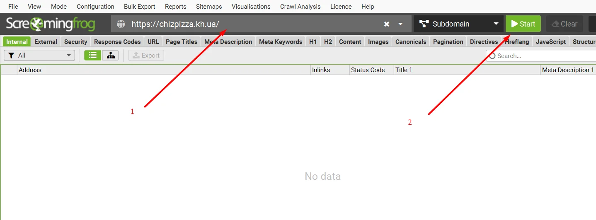
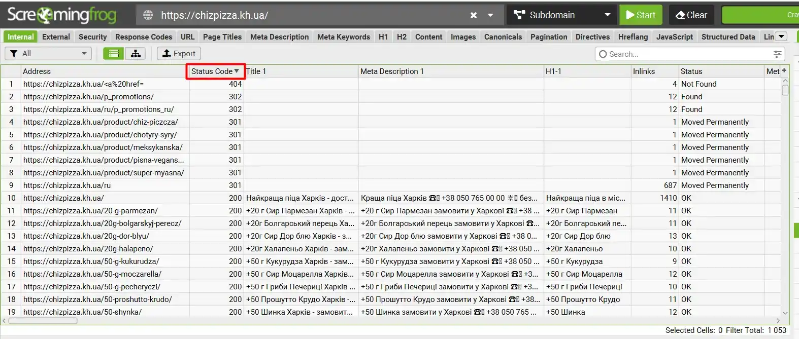
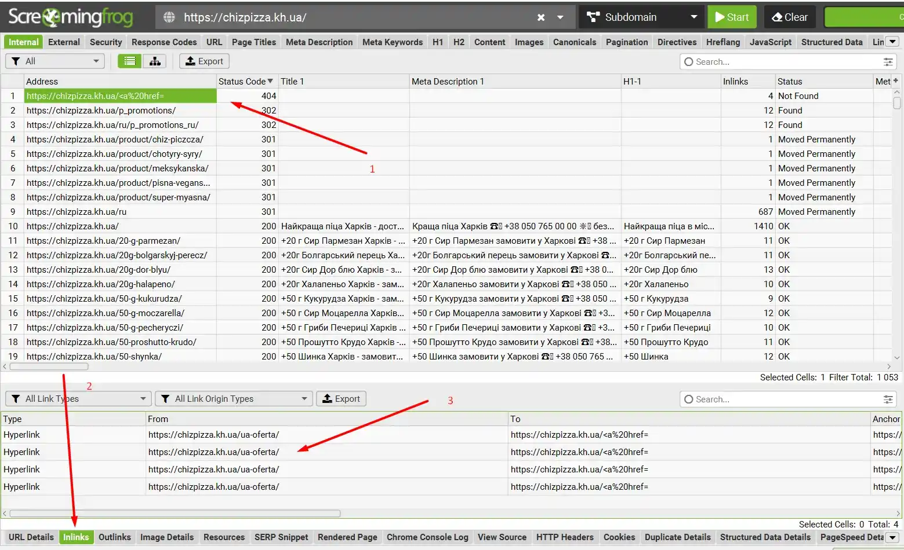
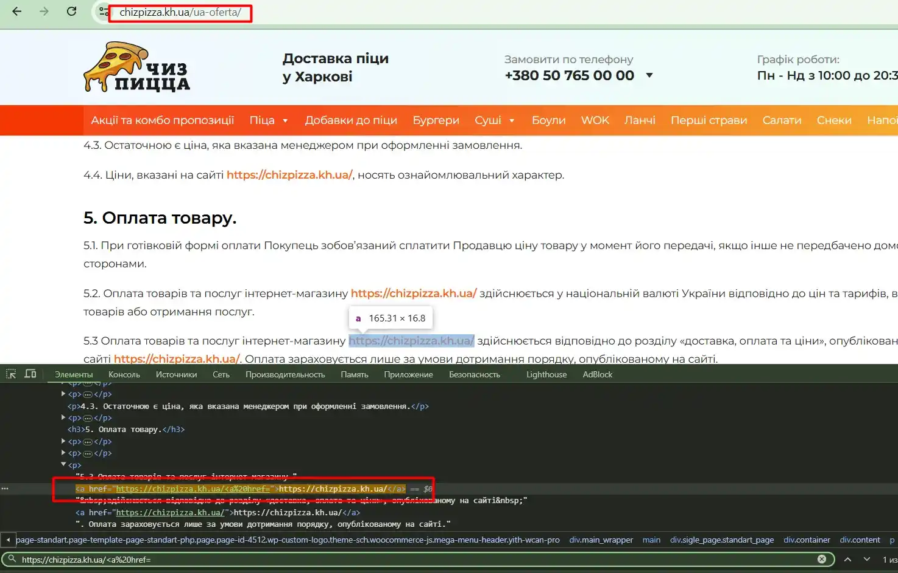
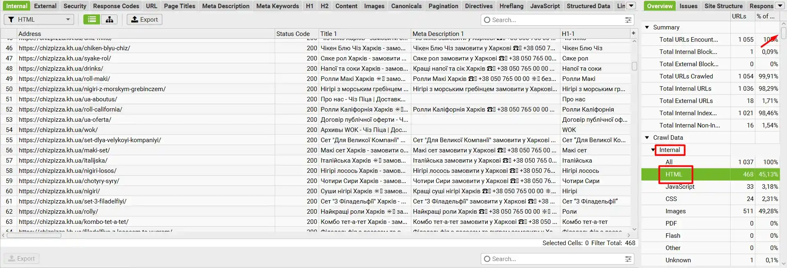
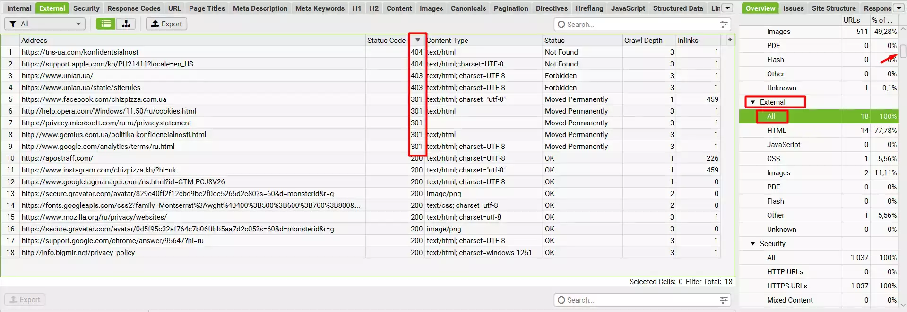
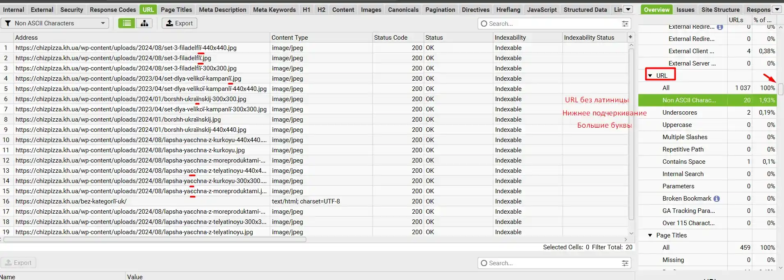
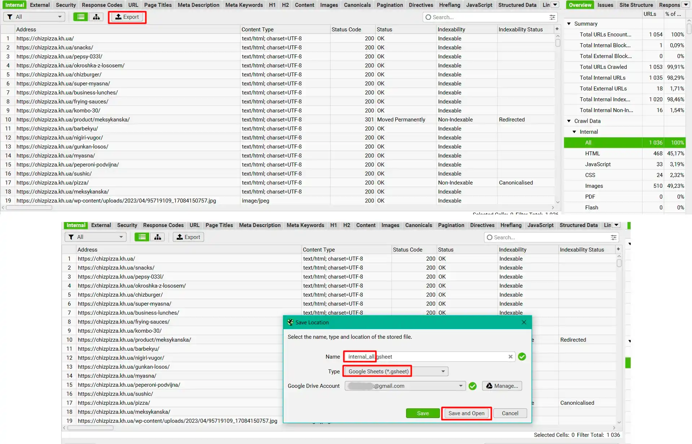
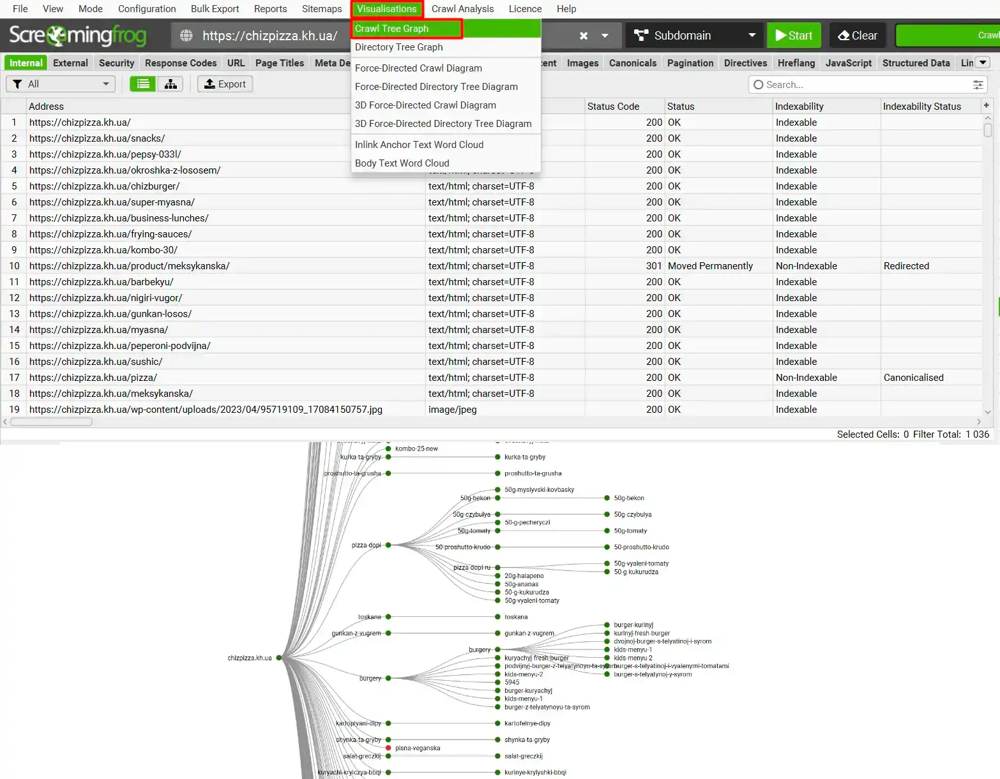

SCREAMING FROG FOR BEGINNERS
In this article, I have compiled a short manual for beginner SEO specialists who are starting to do optimization, in which Screaming Frog will help them. I will describe the most important functions that are necessary for analyzing a site, without unnecessary fluff and functions.
Where to download Screaming Frog?
You can download a free version of Screaming Frog from its official website, but when using it, you will only be able to scan up to five hundred links, and this is very little. It is better to install a hacked version from rutracker.org, as many do. You will find all the installation instructions on the file sharing website. I am using version 19.0.
How to scan a site?
So, let's start scanning the site. Everything is very simple, insert the domain in the top line in the program and click the Start button.
There are cases when a site closes scanning for programs such as Screaming Frog. In this case, in the top panel we click Configuration > User-Agent and in the window that opens, select Google (Desktop) and click OK. After that, click Start.

Next, wait until the program scans the entire site.
What to do after scanning the site?
We have scanned the site and see many panels, columns, etc. Now I will explain the most important parameters that we need.

First, this is a large table with data on links, in it we can find the most necessary information - response code (200, 300, 400, 500), title, description, H1. The columns can be set in any order, you can set them as I have in the previous screenshot. Also, by clicking on the column name, we can sort the data from A to Z, from Z to A, from largest to smallest, from smallest to largest.
In the previous screenshot, I sorted the Status Code in descending order, and you may have noticed that our site has 404, 302 and 301 links. And here is the most important question.
Where is the required link located on the site?
To find the required link in Screaming Frog, you need to click on the link and select Inlinks in the bottom panel. The first column is the page where the broken link is located.
This is how it works in practice.
How to sort only pages?
From the previous screenshots, you noticed that the program scanned absolutely all files, but we only need information about the site pages. For this we need the sidebar of the site, in Internal we select HTML and we sort only pages.
How to view outgoing links from the site?
Next, I will show you all the functions of the sidebar. In External we click All and the program shows all outgoing links from our site. Here we can see links with unwanted response codes (300, 400, 500).
To find out where they are located on the site, read above under the heading "Where is the desired link located on the site?".
Information about links on the site
There is a useful URL property in the sidebar, it shows URL errors - Latin letters, underscores, capital letters, etc.
Information about title and description
In the sidebar, on the Page Titles and Meta Description tabs, there is information about the title and description. You can view missing meta tags, duplicates, too short or too long.

The same data can be found in the H1 tab about the H1 heading.

Working with Images in Screaming Frog
The sidebar on the Images tab contains filters that can be used to detect images with a large weight, images without an ALT attribute, images without text in the ALT attribute, and so on.

How to Unload data?
When you have found the necessary data, you can download it to Excel or Google Sheets for further work with it. To download, click Export. Next, come up with a name for the document that is different from the standard one, then select Type - Google Sheets, having confirmed the email for downloading in advance and click Save and Open or just Save.
Create a Sitemap in Screaming Frog
There are admin panels such as Wordpress or OpenCart that generate a sitemap themselves, but if this is not possible, then Screaming Frog will help us. You need to click Sitemaps in the top panel, then select XML Sitemap if you need a site page map, and Images Sitemap if you need a site image map. In the window that opens, click the Export button.

Site tree in Screaming Frog
In Screaming Frog, you can create a site tree, this will help you understand the nesting of pages and categories. To do this, click Visualisations > Crawl Tree Graph. There are several types of "trees", you can familiarize yourself with all of them.
The most important secret of Screaming Frog
Before writing this article, I read two full manuals on Screaming Frog (Link 1 and Link 2), so as not to miss any point, and after reading, discover new information that you did not know before. When you master the basic skills of the program, do not stop and read new articles and study the interface yourself.